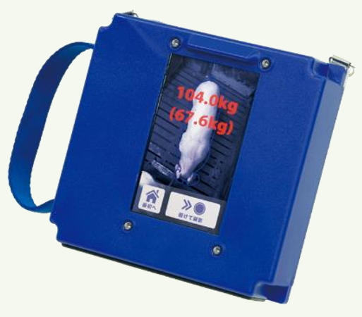
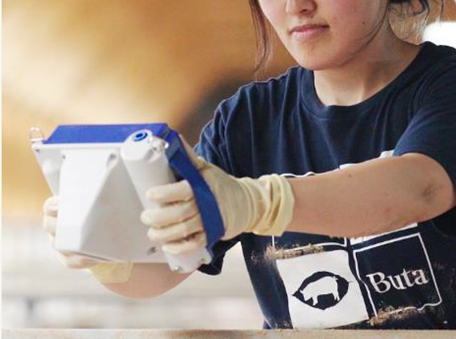
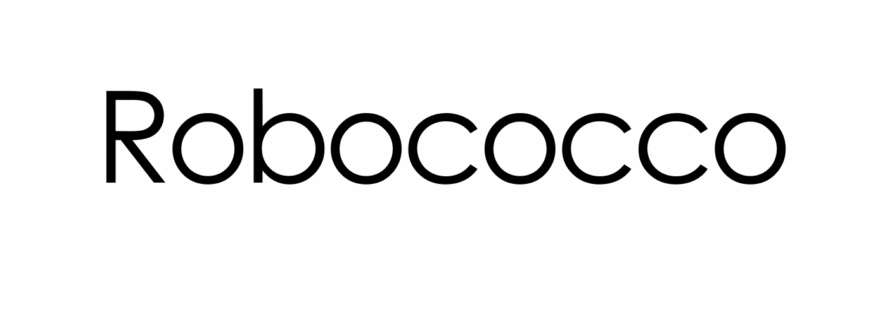
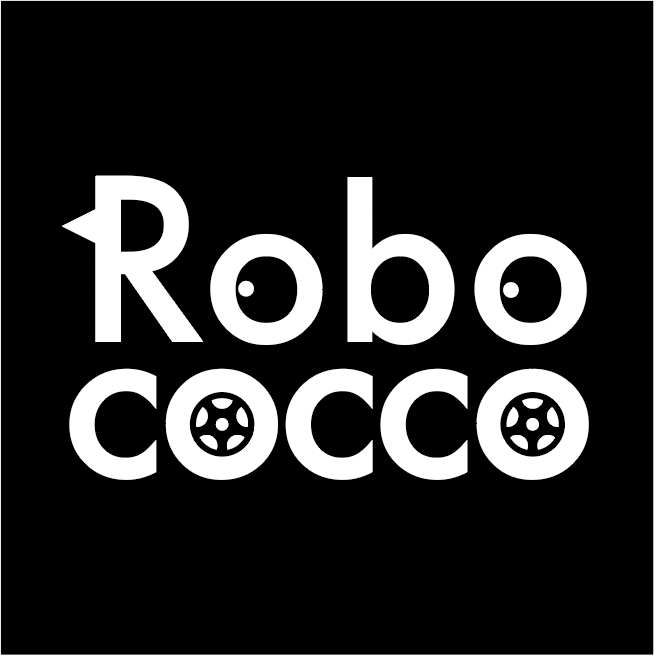

TECHNOLOGY-KEEPS GOING
農業・畜産分野（農林水産省）

◆IoT・AI・ロボットを独自の視点でコーディネート
“デジタル目勘” 画像から体重測定

＜特徴＞
「非接触型」の体重推定システム
小型・軽量で長時間稼働
安定的に高い制度で推定

- 撮影した豚の画像から、独自の画像認識技術を組み込んだ計測ロジックで豚の体重を推定する「デジタル目勘」。
- 出荷時の体重の違いなどで豚の価格は変わることに悩む養豚農家に対し、本サービスは豚の体重を簡易に推定することで養豚農家の作業省力化、経営向上に貢献。
農水省HP
“農林水産業の作業安全対策に資する
新技術カタログ”掲載中

Smart Cage Monitoring System
Research
Design
Development
Manufacturer
LWIR camera module
Artificial Intelligence
Automatic Guided Vehicle
World’s First
発電所（火力・水力）の保安の現状
火力発電所の定期事業者検査は運転状況や設備の劣化状況にかかわらず一定の間隔で設備を止めて検査を行っている。しかしながら、電気保安人材の高齢化や入職者が減少する中、保安力の維持向上と生産性向上の両立が課題となっている。各事業者は、Iot、AI,ドローンなど新技術導入を推進したい考えだが障害となる規制が多く進まないのが現状である。
国（経産省）の取り組み
このため経済産業省は、スマート保安化に向けた課題を取りまとめ規制の見直しを計る。将来の発電所の無人化も期待できる。
発電所 保安スマート化の提案
そこで私たちは、死亡鶏発見ロボットで培ったノウハウを基に、発電所を自動走行とAIによる巡回監視を目指している。